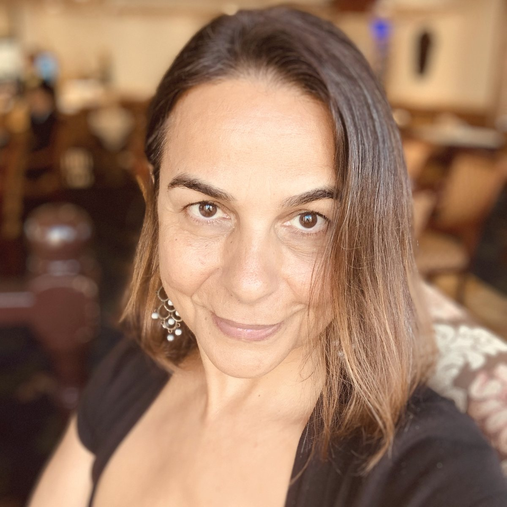
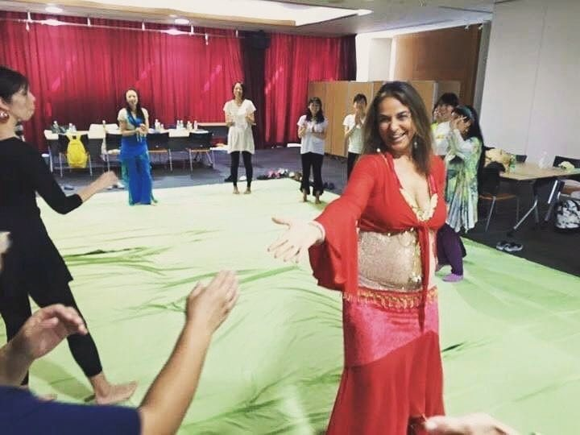

下書き（えこさん確認用） Maha 先生ご本人にはまだ正式にお願いしていません。会場・参加費・通訳は相談中です。要確認 の印がついているところを一緒に決めましょう。
Draft for Eiko-san — Maha has not been formally asked yet. Venue, fee and interpretation are still being discussed. Items marked TBC are open for us to decide together.
EmbodyBirth™ と BellydanceBirth® の創設者、Maha Al Musa 先生が年末に東京を訪れます。助産師、ドゥーラ、母子に寄り添うみなさんと、女性のからだの知恵について語り合う、少人数の午後の集いです。
Maha Al Musa, founder of EmbodyBirth™ and BellydanceBirth®, is visiting Tokyo at the end of the year. Join a small afternoon gathering for midwives, doulas and everyone who walks alongside mothers, to talk about the wisdom held in women's bodies.
輪になって座り、ひとりずつ名前と今日ここに来た思いを。
We sit in a circle and each share our name and what brought us here.
子宮は収縮しても、からだ全体はひらいていく必要がある。言葉を変えると、お産の受けとめ方が変わる。Maha 先生が 1997 年から伝えてきた考え方を聞きます。
The uterus contracts, yet the whole body needs to open. When the words change, so does the way we meet birth. Maha shares the approach she has taught since 1997.
振り付けは覚えません。骨盤をゆらし、呼吸にあわせて、自分のからだの動きを感じてみる時間です。動きやすい服装でどうぞ。
No choreography to learn. We let the pelvis sway, follow the breath and notice how our own bodies want to move. Please wear comfortable clothes.
日々の現場で感じている疑問を、そのまま先生に。
Bring the questions that come up in your daily work.
同じ部屋で、ちょっといいお弁当を囲みながらゆっくり話しましょう。19:00 ごろ解散です。
We stay in the same room and share a good bento together, with time to talk. We close around 19:00.

パレスチナ・レバノン系オーストラリア人のバースメンター。1997 年から国際的に出産教育に携わり、EmbodyBirth™ と BellydanceBirth® を創設しました。妊娠・出産のためのベリーダンスの本『Dance of the Womb』の著者です。
A Palestinian-Lebanese Australian birth mentor who has taught birth education internationally since 1997, founding EmbodyBirth™ and BellydanceBirth®. She is the author of Dance of the Womb, a book on bellydance for pregnancy and birth.
原点は、パレスチナの村の産屋で 9 人の子を産んだ祖母 Aminah。三人の子どもを自然出産で迎え、末娘は 46 歳のとき、自宅の水中でロータスバースで生まれました。
Her roots go back to her grandmother Aminah, who birthed all nine of her babies in the family birthing house in a Palestinian village. Maha gave birth to her three children naturally; her youngest was born at home in water, a lotus birth, when Maha was 46.
A mother's body, your body with your baby, knows how to give birth.
母親のからだは、赤ちゃんと一緒に、産み方を知っている。
Maha Al Musa / EmbodyBirth™

Birth is not an emergency, it is a spiritual emergence.
お産は緊急事態ではなく、魂があらわれてくるとき。
Maha Al Musa
助産師、ドゥーラ、産前産後のケアに関わる方、ヨガやボディワークの指導者。そして、お産に限らず女性のからだとウェルネスに関心のあるすべての方。初めて Maha 先生に会う方も歓迎します。
Midwives, doulas, people working in pre- and postnatal care, yoga and bodywork teachers, and anyone interested in women's bodies and wellbeing beyond birth itself. You are welcome even if this is your first time meeting Maha's work.
日本語と英語で寄り添う東京のバースドゥーラ。Tokyo International Doula Service 主宰。Dancing For Birth™ クラスも開いています。5 児の母。えこさん確認
Japanese- and English-speaking birth doula in Tokyo, running Tokyo International Doula Service. She also teaches Dancing For Birth™ classes. Mother of five. Eiko to confirm
台湾と逗子を拠点にするドゥーラ・出産教育者。2025 年に EmbodyBirth Educator 認定を修了。2024 年、Maha 先生の台湾ワークショップを主催しました。
Doula and birth educator based between Taiwan and Zushi. Certified EmbodyBirth Educator (2025). Organised Maha's workshops in Taiwan in 2024.
定員は約 20 名の小さな集いです。申し込みフォームは準備中です。
This is a small gathering of about 20. The registration form is being prepared.